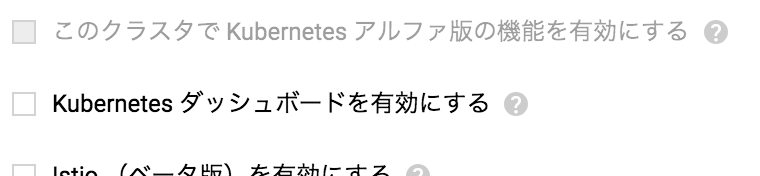
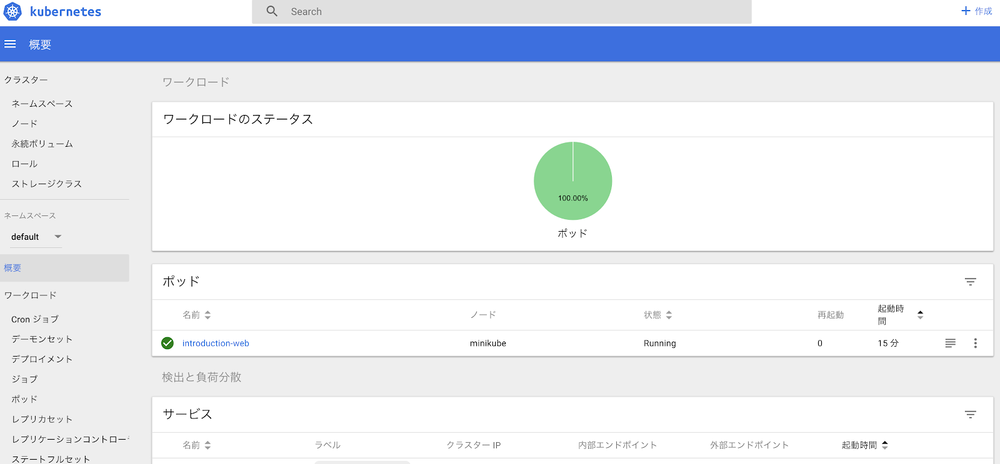
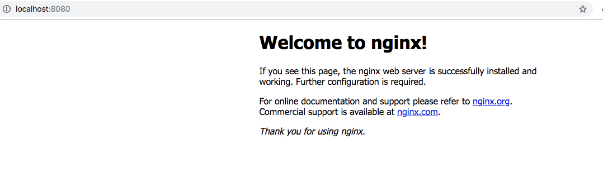
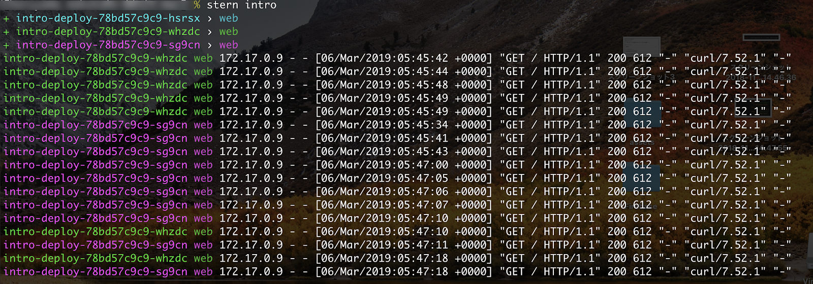
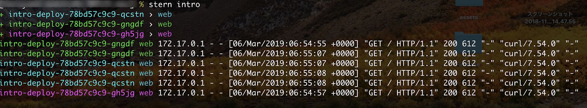

kubernetesはいろいろあって難しい感じもしますが、手を動かせば理解も進むと思います。
なので、手を動かしてみましょう。
本当だったらGKEとかを使ってみたいところですが、お金もかかるのでローカルでkubernetesを動かせるminikubeを使います。
minikubeは一つのノードで動くkubernetesクラスタを起動させます。
さて、ここでもうすでにkubernetesの単語がいろいろでてきていて混乱し始めるところでしょう。
まずはでてくるkubernetes用語を少し整理します。
用語の一覧は下記にまとまっています。
https://kubernetes.io/docs/reference/glossary/
さらに kubectl explain コマンドでも詳細を知ることができます。
ただ、このページを読むだけだとわけわからんと思うので、これから関係ありそうな用語を抜き出して簡単にしてまとめます。
localhost を使ってやりとりできます。ここまできたら実際に手を動かしてみましょう。
macを使っている前提で話を進めます。
下記のリンクの手順をほぼそのまま使っています。
https://kubernetes.io/docs/tasks/tools/install-minikube/
Hypervisorとは？
VirtualBox | |
VMware Fusion | |
Hyperkit |
ちなみに自分はVirtualBoxを使っています。
brew経由でインストールできます
% brew cask install minikube
gcloud SDK 237.0.0によってkubectlの管理が前に比べて劇的によくなりました。
kubectlのバージョンはv1.11.7になり、さらに、複数のkubectlのバージョンも含まれるようになりました。(kubectl.1.9 kubectl.1.10 kubectl.1.11 kubectl.1.12 kubectl.1.13 というコマンドが含まれるようになりました。)
もうbrewに頼る必要はないのです！
下記に従ってgcloud SDKをインストールしましょう。
https://cloud.google.com/sdk/docs/quickstart-macos?hl=en
gcloud SDKがインストールできればgcloudコマンドが使えるようになっていると思うので、gcloudコマンド経由でkubectlをインストールしましょう。
% gcloud components install kubectl
% kubectl version
Client Version: version.Info{Major:"1", Minor:"11", GitVersion:"v1.11.7", GitCommit:"65ecaf0671341311ce6aea0edab46ee69f65d59e", GitTreeState:"clean", BuildDate:"2019-01-24T19:32:00Z", GoVersion:"go1.10.7", Compiler:"gc", Platform:"darwin/amd64"}
Server Version: version.Info{Major:"1", Minor:"13", GitVersion:"v1.13.3", GitCommit:"721bfa751924da8d1680787490c54b9179b1fed0", GitTreeState:"clean", BuildDate:"2019-02-01T20:00:57Z", GoVersion:"go1.11.5", Compiler:"gc", Platform:"linux/amd64"}
楽な時代になったものだ。
クラスターの切り替えが楽になるのでいれておくとよいかと思います。
% brew install kubectx
sternはkubernetesのログを見るためには便利なツールなのでインストールしておきましょう。
brew経由でインストールできます。
% brew install stern
ここまでくれば準備はOKだと思います。
それでは実際にminikubeを起動させてkubernetesの世界に入ってみましょう
% minikube start
動かなかった場合の対応
自分の場合は Error restarting cluster: restarting kube-proxy: waiting for kube-proxy to be up for configmap update: timed out waiting for the condition がでて、下記の用に対応しました。
# とりあえず潰しても問題なさそうであれば % minikube delete % minikube start # 動いた！
minikubeが起動できてたら、kubernetesを触る準備は万全です。
kubectxを使ってどのクラスタを操作しているかを確認しましょう！
minikube起動直後では、minikubeクラスタが指定されていると思います。
% kubectx minikube
特にまだなにもしていないので、Podとかも上がってないです。
ノードはいます。
% kubectl get nodes NAME STATUS ROLES AGE VERSION minikube Ready master 42m v1.13.3 % kubectl get pods No resources found.
kubernetesのサンプルのマニフェストファイルはkubernetes_introductionにおいておきました。
cloneして使います。
% git clone https://github.com/SpringMT/kubernetes_introduction.git % cd kubernetes_introduction/manifests
ではPodを作ってみましょう。
kubectl apply コマンドを使います。
事前に kubectx でクラスタがminikubeになっていることを確認しておいてください！
% kubectl apply -f step1/pod.yaml pod/introduction-web created % kubectl get pods NAME READY STATUS RESTARTS AGE introduction-web 1/1 Running 0 22s
おおお、無事立ち上がっています。
Podの詳細も確認してみましょう。
% kubectl describe pods introduction-web
Name: introduction-web
Namespace: default
Priority: 0
PriorityClassName: <none>
Node: minikube/10.0.2.15
Start Time: Tue, 05 Mar 2019 16:16:32 +0900
Labels: app=web
Annotations: kubectl.kubernetes.io/last-applied-configuration={"apiVersion":"v1","kind":"Pod","metadata":{"annotations":{},"labels":{"app":"web"},"name":"introduction-web","namespace":"default"},"spec":{"container...
Status: Running
IP: 172.17.0.6
Containers:
web:
Container ID: docker://828586eb578dade41a1ba49accabd7981e9ffe22086c67eef1a23356d41f6baa
Image: nginx
Image ID: docker-pullable://nginx@sha256:e2048a115f51d61fa589f5f592f677300f1c122de07904e0ebefe44a6a89da23
Port: <none>
Host Port: <none>
State: Running
Started: Tue, 05 Mar 2019 16:16:50 +0900
Ready: True
Restart Count: 0
Environment: <none>
Mounts:
/var/run/secrets/kubernetes.io/serviceaccount from default-token-kgtlz (ro)
Conditions:
Type Status
Initialized True
Ready True
ContainersReady True
PodScheduled True
Volumes:
default-token-kgtlz:
Type: Secret (a volume populated by a Secret)
SecretName: default-token-kgtlz
Optional: false
QoS Class: BestEffort
Node-Selectors: <none>
Tolerations: node.kubernetes.io/not-ready:NoExecute for 300s
node.kubernetes.io/unreachable:NoExecute for 300s
Events:
Type Reason Age From Message
---- ------ ---- ---- -------
Normal Scheduled 22m default-scheduler Successfully assigned default/introduction-web to minikube
Normal Pulling 22m kubelet, minikube pulling image "nginx"
Normal Pulled 22m kubelet, minikube Successfully pulled image "nginx"
Normal Created 22m kubelet, minikube Created container
Normal Started 22m kubelet, minikube Started container
いろいろでてきましたね。
まあ、いまのところはスルーで大丈夫です。
kubectl get や kubectl describe の使い方を手になじませてください。
sternを使ってログも確認してみましょう。
sternは tail -f ぽくログを流してくれます。
% stern introduction + introduction-web › web
Podができているログくらいしか確認できないですが、ログがでていることもわかりました。
kubectl logs introduction-web でもログは確認できます。(この場合なにもログはでてきません。ちなみに、 sternのように tail -f のようにログが流すことはできないです)
kuberenetesのdashboardでも確認してみましょう。
kubernetesになれないうちはdashboardを使ってGUIで確認するとなにかと理解しやすいかと思います。
ただし本番環境でdashboard機能をonにする場合は気をつけましょう。
こんな事例もあります。
https://redlock.io/blog/cryptojacking-tesla
GKEを使っている場合は、クラスタを作る際にdashboar機能をoffにする機能があるので(どフォルトoff)、これを使ってoffにするとよいかと思います。

minikubeの場合は、 minikube dashboard コマンドを使います。
% minikube dashboard 🔌 Enabling dashboard ... 🤔 Verifying dashboard health ... 🚀 Launching proxy ... 🤔 Verifying proxy health ... 🎉 Opening http://127.0.0.1:59459/api/v1/namespaces/kube-system/services/http:kubernetes-dashboard:/proxy/ in your default browser...
minikube以外の場合はこちらを参照ください。
https://github.com/kubernetes/dashboard
dashboardはこんな感じになっているかと思います。

kubectl get や kubectl describe で取得できる情報と同等の情報が確認できると思います。
削除する方法は2つあります。
% kubectl delete pods introduction-web
or
% kubectl delete -f step1/pod.yaml
基本的にファイルを指定することで、もれなく削除できるので、ファイル指定をおすすめします。
念の為削除されているか確認もしましょう
% kubectl get pods No resources found.
step1のマニフェストファイルを使うと、どこにもポートが空いていない状態なので、単純に上がっているだけのPodになります。
では、通信できるPodを作ってみましょう。
今度はstep2のディレクトリに含まれるマニフェストを使います。
# kubectxでクラスタの確認を忘れずに！ % kubectx % kubectl apply -f step2/pod.yaml pod/introduction-web created % kubectl get pods NAME READY STATUS RESTARTS AGE introduction-web 1/1 Running 0 76s
クラスタ内で80番ポートが空いているPodが上がります。
このままでは、クラスタ外からはアクセスできません。
アクセスできるようにするには、サービスを作る方法もありますが、サービス経由の設定はあとにまわして、今回は一旦特定のPodと通信できるようにできるようにプロキシする方法でアクセスしてみます。
ローカルの8080番ポートでPodのアクセスするように設定して試してみます。
% kubectl port-forward introduction-web 8080:80 Forwarding from 127.0.0.1:8080 -> 80 Forwarding from [::1]:8080 -> 80
http://localhost:8080/にアクセスしてみましょう。

ログも見てみましょう。
% stern introduction-web + introduction-web › web introduction-web web 127.0.0.1 - - [05/Mar/2019:09:04:26 +0000] "GET / HTTP/1.1" 200 612 "-" "curl/7.54.0" "-" introduction-web web 127.0.0.1 - - [05/Mar/2019:09:04:39 +0000] "GET / HTTP/1.1" 200 612 "-" "Mozilla/5.0 (Macintosh; Intel Mac OS X 10_13_6) AppleWebKit/537.36 (KHTML, like Gecko) Chrome/71.0.3578.98 Safari/537.36" "-" introduction-web web 2019/03/05 09:04:39 [error] 7#7: *2 open() "/usr/share/nginx/html/favicon.ico" failed (2: No such file or directory), client: 127.0.0.1, server: localhost, request: "GET /favicon.ico HTTP/1.1", host: "localhost:8080", referrer: "http://localhost:8080/" introduction-web web 127.0.0.1 - - [05/Mar/2019:09:04:39 +0000] "GET /favicon.ico HTTP/1.1" 404 555 "http://localhost:8080/" "Mozilla/5.0 (Macintosh; Intel Mac OS X 10_13_6) AppleWebKit/537.36 (KHTML, like Gecko) Chrome/71.0.3578.98 Safari/537.36" "-"
無事アクセスできました！
Podが一つであればこれくらいでなんとかなりますが、現実はそんな訳ありません。
1Podは今までの1プロセスに当たるくらいの最小の単位です。
現実のアプリケーションを運用するには、複数の種類のPodまとめて管理する必要がでてきます。
それを実現するのがReplicaSetとDeploymentです。
次に行く前に立ち上げたPodをお掃除しておきましょう。
% kubectl delete -f step2/pod.yaml pod "introduction-web" deleted % kubectl get pods No resources found.
ここからkubernetesぽくなってきます。
ちょっとここでkuberenetesの強みについて少しお話します。
今までのPodの立ち上げにおいて、書いているのはyamlのマニフェストファイルだけです。
この記述内容は何が必要かだけを記載しているいわゆる宣言的なコードになっているかと思います。kubernetesはこの宣言的なコードによる管理ができることでシステムの構築や管理を自動化しやすいようにしています。kubernetesの強みの一つはこうした宣言的なコードによる管理ができる点にあります。
もちろんkubernetesの強みはこれだけあるはずがありません。
ここで、ReplicaSetの話に戻します。
ReplicaSetはkubernetesの別の強みである、セルフヒーリングの機能を提供してくれます。
ReplicaSetは実行されているPodの数を保証する仕組みです。
ReplicaSetに定義されているPodのテンプレートを元にPodのレプリカ(複製)を指定された数に一致するように管理してくれます。
では実際に試してみましょう。
ではReplicaSetを作ってみましょう
今回は3つのPodを上げます。
# クラスタの確認を忘れずに！ % kubectx % kubectl apply -f step3/replica_set.yaml replicaset.apps/intro-rs created % kubectl get pods NAME READY STATUS RESTARTS AGE intro-rs-2wqvw 1/1 Running 0 27s intro-rs-brllz 1/1 Running 0 27s intro-rs-mwdjv 1/1 Running 0 27s # 一個消してみる % kubectl delete pod intro-rs-2wqvw # すぐに3個になるようにPodができる % kubectl get pods NAME READY STATUS RESTARTS AGE intro-rs-7zhxh 0/1 ContainerCreating 0 4s # <- New!! intro-rs-brllz 1/1 Running 0 2m1s intro-rs-mwdjv 1/1 Running 0 2m1s
Podが一時的に落ちてもすぐに新しいPodが出来上がる様子が伺えます。
さて、ReplicaSetがPodのセルフヒーリングを提供してくれたわけですが、これによって耐障害性が上がり万々歳とはなりません。。
ReplicaSetはあくまでPodのレプリカを作り指定された数ぶんのPodを立ち上げ続けられるように管理するだけです。
ReplicaSet単位でのアップデートは提供してくれません。
ReplicaSetやさらにはPodのアップデートを提供してくれる仕組みがDeploymentになります。
次に行く前に立ち上げたReplicaSetをお掃除しておきましょう。
% kubectl delete -f step3/replica_set.yaml replicaset.apps "intro-rs" deleted % kubectl get pods No resources found.
DeploymentはReplicaSetとPodのアップデートを担当します。
DeploymentはReplocaSetを管理し、ReplicaSetがPodを作成したりします。
実際はこのDeploymentを使うことがほとんどで、ReplicaSetやPodを直接マニフェストで定義すること滅多にありません。
最初からこれを説明しろよ感がありますが、まあ、PodやReplicaSetを説明しないと分かりづらいと思ったのでここまで引っ張りました。
DeploymentはReplicaSetによって管理されるPodの数を保ちながら、Podをアップデートする仕組みを提供しています。
アップデートの方法の特徴してRollingUpdateがあります。
新しいPodを一定数つくりながら、古いPodをその分だけ削除していく、効率よくアップデートを行う仕組みです。
この仕組みを使ってBlue-Green-Deploymentも実現可能です。
では実際にDeploymentを使ってみましょう。
# クラスタの確認を忘れずに！ % kubectx % kubectl apply -f step4/deployment.yaml deployment.apps/intro-deploy created % kubectl get pods NAME READY STATUS RESTARTS AGE intro-deploy-78bd57c9c9-79trj 1/1 Running 0 12s intro-deploy-78bd57c9c9-99mzp 1/1 Running 0 12s intro-deploy-78bd57c9c9-l6sxw 1/1 Running 0 12s % kubectl get deploy NAME READY UP-TO-DATE AVAILABLE AGE intro-deploy 3/3 3 3 19s # 配布するimageのバージョンを変えてapplyしてみる % kubectl apply -f step4/deployment.yaml deployment.apps/intro-deploy configured % kubectl get deploy NAME READY UP-TO-DATE AVAILABLE AGE intro-deploy 2/3 3 2 92s # 入れ替え中 % kubectl get pods NAME READY STATUS RESTARTS AGE intro-deploy-5d77889745-9scnz 0/1 ContainerCreating 0 5s intro-deploy-5d77889745-jslth 0/1 ContainerCreating 0 5s intro-deploy-5d77889745-lnznf 0/1 ContainerCreating 0 5s intro-deploy-78bd57c9c9-79trj 1/1 Running 0 95s intro-deploy-78bd57c9c9-99mzp 1/1 Running 0 95s intro-deploy-78bd57c9c9-l6sxw 0/1 Terminating 0 95s # 入れ替え完了 % kubectl get pods NAME READY STATUS RESTARTS AGE intro-deploy-5d77889745-9scnz 1/1 Running 0 73s intro-deploy-5d77889745-jslth 1/1 Running 0 73s intro-deploy-5d77889745-lnznf 1/1 Running 0 73s
kubectl set image deployment/intro-deploy nginx=nginx:1.15 のように kubectl set image でimageを入れかえることでアップデートをすることも可能です。
Deploymentまでで、だいたいPodの管理については終わりです。
お掃除しておきましょう。
% kubectl delete -f step4/deployment.yaml deployment.apps "intro-deploy" deleted
さて、ここまででPodをどうやって一つにまとめて運用するかについてを見てきました。
Pod上でアプリケーションを動かしていても、それにアクセスできなければ、ユーザーは使えないですね。
kubernetesの内部的にはPod同士が通信できるようにネットワークができています。
通信自体は可能なので、自分でPod間のトラフィックを制御するなにかを作って制御することは可能です。
ですが、そんなことをしなくても、kubernetesがちゃんと用意してくれています。
それがServiceです。
Serviceは負荷分散とかいろいろありますが、要はLabelのセレクタを作る仕組みが本質だと思います。
PodのLabelを指定してひとまとめにして、そのLabelがついているPodに対してトラフィックを流すのがServiceの役割になります。
このトラフィックを流すという仕組みが負荷分散の仕組みになり、この負荷分散の仕組はkubernetesは複数用意してくれています。
またトラフィックの制御という観点から、PodのProbeと連携して正常な状態のPodに対してトラフィックを流すという仕組みも備えています。
では、Serviceを実際に触ってみましょう。
ServiceとDeploymentは密接に関わっていることが多いので、自分の場合は1ファイルにまとめて管理することが多いです。
まずはClusterIP typeでServiceをつくって試してみましょう。
ClusterIPはServiceの中では一番プリミティブなServiceといっていいでしょう。
ClusterIPはクラスタ内の内部IPでServiceを作り、クラスタ内からのみアクセス可能です。
では試してみましょう。
# クラスタの確認を忘れずに！ % kubectx % kubectl apply -f step5/service_deployment.yaml service/intro-api created deployment.apps/intro-deploy created % kubectl get pods NAME READY STATUS RESTARTS AGE intro-deploy-78bd57c9c9-hsrsx 1/1 Running 0 4m45s intro-deploy-78bd57c9c9-sg9cn 1/1 Running 0 4m45s intro-deploy-78bd57c9c9-whzdc 1/1 Running 0 4m45s % kubectl get deploy NAME READY UP-TO-DATE AVAILABLE AGE intro-deploy 3/3 3 3 4m48s % kubectl get service NAME TYPE CLUSTER-IP EXTERNAL-IP PORT(S) AGE intro-api ClusterIP 10.104.231.157 <none> 8080/TCP 4m51s kubernetes ClusterIP 10.96.0.1 <none> 443/TCP 23h
もちろんこれではクラスタ外からはアクセスできません、、、
クラスタの中のPodに一つに入ってみて試して見ましょう。
% kubectl exec -it intro-deploy-78bd57c9c9-hsrsx -- /bin/bash
root@intro-deploy-78bd57c9c9-hsrsx:/# apt-get update
root@intro-deploy-78bd57c9c9-hsrsx:/# apt-get install -y curl
root@intro-deploy-78bd57c9c9-hsrsx:/# curl 10.104.231.157:8080 #何回も叩いてみる
# Serviceオブジェクトが作られると、kubernetes内部のDNSに{:service name}.{namespace名}.svc.cluster.localのドメインが発行される
root@intro-deploy-78bd57c9c9-hsrsx:/# curl intro-api.default.svc.cluster.local:8080
そうするとログがこんな感じででます。

セレクタで指定されたPodに分散している様子が見えます。(curlを叩いてるPodにはアクセスは行かない模様)
作ったServiceは消しておきましょう。
% kubectl delete -f step5/service_deployment.yaml
NodePortはクラスタ上の全てのノード上の指定したポートに到達したトラフィックをPodに流すことができます。
なので、ノードのIPアドレスが公開されていれば、クラスタ外からのトラフィックもPodへ流すことができます。
では早速NodePortのServiceを作ってみましょう。
# クラスタの確認を忘れずに！ % kubectx % kubectl apply -f step6/service_deployment.yaml service/intro-api created deployment.apps/intro-deploy created % kubectl get pod NAME READY STATUS RESTARTS AGE intro-deploy-78bd57c9c9-gh5jg 1/1 Running 0 46s intro-deploy-78bd57c9c9-gngdf 1/1 Running 0 46s intro-deploy-78bd57c9c9-qcstn 1/1 Running 0 46s % kubectl get deploy NAME READY UP-TO-DATE AVAILABLE AGE intro-deploy 3/3 3 3 49s % kubectl get service NAME TYPE CLUSTER-IP EXTERNAL-IP PORT(S) AGE intro-api NodePort 10.104.75.252 <none> 8080:30080/TCP 53s kubernetes ClusterIP 10.96.0.1 <none> 443/TCP 24h
こんな感じで作られるかと思います。
ではminikubeのクラスタのノードの情報がわかればアクセスできますね！
最初に書いた通りminikubeはノードが1つなので、ノードのIPアドレスも1つです。
確認方法は下記コマンドでできます。
% minikube ip 192.168.99.100
おおお、これがminikubeではノードのIPアドレスと一致します。
ではこのIPアドレスに向けてアクセスしてみましょう。
sternでログを出すの忘れずに！
% curl 192.168.99.100:30080
sternのログはこんな感じになります！

リクエストが来ていることがわかると思います。
これでServiceに関しては入門としては十分かと思います！
は作ったオブジェクトを消しておきましょう。
% kubectl delete -f step6/service_deployment.yaml service "intro-api" deleted deployment.apps "intro-deploy" deleted
Serviceの役割を整理するとこんな感じです。(Kubernetes完全ガイド p194より)
昨今のHTTPサーバーを運用するにはServiceでは不足している部分があります。
そこでL7ロードバランシングを行うIngressがあります。
IngressはServiceとも連携して下記のようなことできます(実装次第でいろいろできます)。
どれを使うべきかは一番の悩みごとだと思います。
ServiceのClusterIPとNodePortは前で説明した通りです。
LoadBalancerは、外部にServiceを公開するためには一般的な方法です。
LoadBalancerは基本的にはクラウドプロバイダーが提供しているしているロードバランサーが使われます。
GKEだとTCPのロードバランサーが作成されます。
L４ロードバランサーなので、フィルターやルーティングなどはないですね。
さらにServiceごとにロードバランサーができるので、お金かかります。
IngressはServiceのタイプではないです。
Ingressは複数のServiceをまとめてルーティングしてくれます。
GKEのingressはHTTP(S)ロードバランサーを使います。
このロードバランサーはvhost的な感じで、サブドメインベースのルーティングをしてくれます。
Ingressは一つのIPで複数のSerivceを公開したりするにはとても便利です。
他にもSSLの終端処理などのいろいろ便利な機能はクラウドプロバイダーごとに提供されているので、確認して使いましょう。
今回は入門ということでこれ以上は深掘りしないのですが、ぜひ本などを読んで理解を深めてください。
kubernetesの入門ということで、ざっくりとkubernetesについて紹介してきました。
kubernetesは強力なツールです。
これを機会にさらに深掘りをしていってみてください。
kubernetesを使って本番運用を行うにはまだまだやらなければならないこともあります。
他にもネタがれば@spring_mtまでお知らせください！
2019/03/05より前の話
多分GCP使っている人がほとんどだと思うので、gcloud経由でインストールしたくなることでしょう。
gcloud経由でインストールすると、なんと、v1.10.7のkubectlがふってきます。古すぎる。
というわけで、brew経由でインストールします。(v1.10系を使っててCronJob周りでなにか踏んだ気もするけど、忘れた。。。)
インストール方法
% brew install kubernetes-cli
# これだとgcloudでもkubectlインストールすると、読み込みのタイミングとあでgcloudのほうが優先されることがある
% vim ~/.zshrc
# これを書いておいてもいいかも
alias kubectl="/usr/local/Cellar/kubernetes-cli/{バージョン}/bin/kubectl"
brewとgcloudの両方でインストールしていると、
gcloud components updateするこんなWarningがでてうざいです。。。
WARNING: There are older versions of Google Cloud Platform tools on your system PATH. Please remove the following to avoid accidentally invoking these old tools: /Users/foo/go_appengine/endpointscfg.py /Users/foo/go_appengine/dev_appserver.py /usr/local/Cellar/kubernetes-cli/1.11.2/bin/kubectl